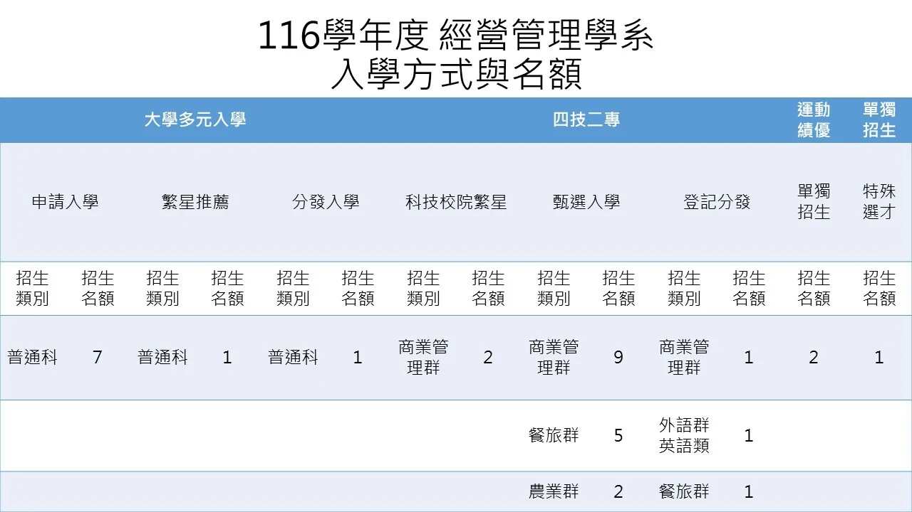
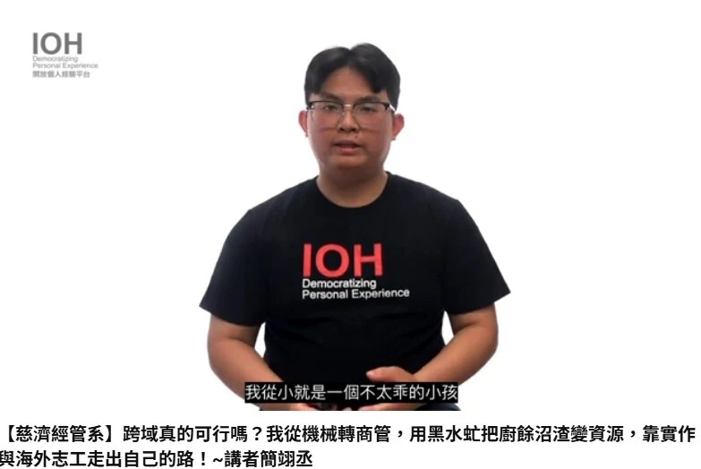
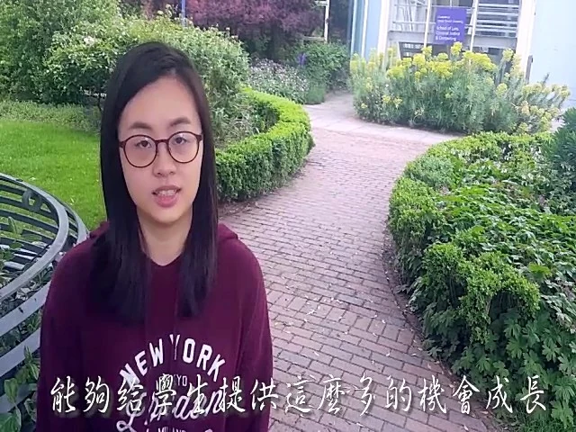
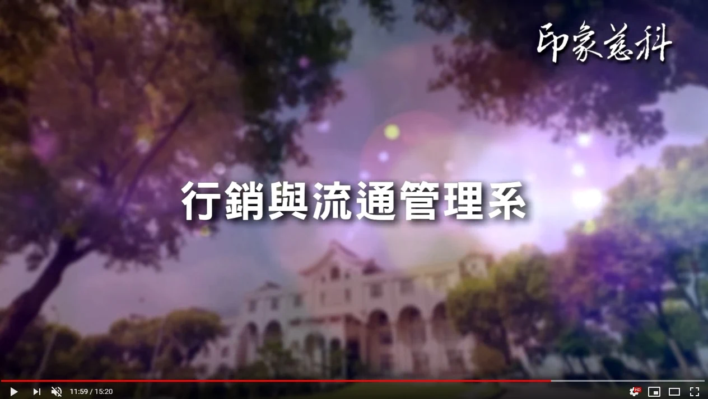
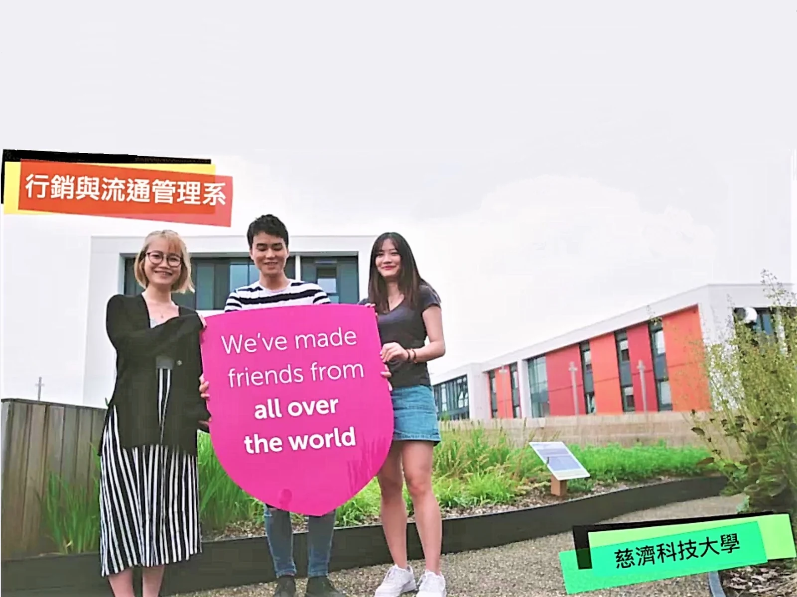
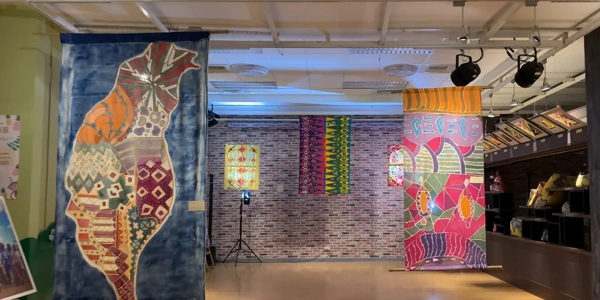

招生資訊
系所原始資料，保留官方發布語言。
以下資料保留官方發布原文；文件與外部連結亦維持原始語言。
----------(115/10/12更新)---------
流用
其他更多詳細的資訊，歡迎加入本系官方@LINE，由專人為您解答本系入學大小事喔！
(歡迎觀看IOH開放個人經驗平台 , Youtube)
(歡迎觀看慈濟大學健康科管理學院雙聯學位 , Youtube)
謝謝慈濟，能夠給學生提供這麼多的機會成長...
(歡迎觀看 海外實習影片檔 ，MP4，7MB)
歡迎加入慈濟科技大學
(請觀看 課程特色影片檔，MP4，10MB)
(歡迎觀看 印象慈科, Youtube)
歡迎觀看 慈科經管 15 秒簡短版 (mp4, 2MB)
歡迎觀看 - 流動的藝術(mp4,4MB)
歡迎觀看 - 美學與行銷管理(mp4,4MB)
簡報與影音檔下載區
⭐115年_慈大經管系招生簡報_中文(20260902) 55.8MB 下載
⭐115年_慈大經管系招生簡報_英文v2 36.3MB 下載
⭐慈濟大學_觀光餐飲人才培育計畫_越南專班_英文版 9.62MB 下載
Q & A
Q. 經管同學曾經到以下哪幾個國家交流？(複選)
(1) 英國 (2) 馬來西亞 (3) 韓國 (4)日本 (5) 美國 (6) 印度
Q. 經管同學出國補助金額類型何者正確？(複選)
(1) 2 萬元 (2) 4 萬元 (3) 4萬以上
Q. 經管有哪幾個國家的學生？(複選)
(1) 馬來西亞 (2) 泰國 (3) 韓國 (4)印尼
Q. 經管有開設以下那些課程? (複選)
(1) 創新與創業管理 (2) 市場調查與分析 (3) 商圈研究 (4) 網路行銷
MDMD
大學生活猜猜看
/var/file/21/1021/img/1510/578588702.pdf
加入@LINE，專人解答本系入學大小事
| 檔案說明 | 檔案大小 | 時間長度 | 下載區 |
|---|---|---|---|
| 1.海外遊學(英國，諾丁漢) | 22 MB | 4:07 | 下載 |
| 2.雙聯學位(健管院) | 12 MB | 4:05 | 下載 |
| 3.教育之光(TED X TCUST) | 4 MB | 1:21 | 下載 |
| 4.海外實習(馬來西亞，Vitrox) | 14 MB | 3:57 | 下載 |
| 5.電商網紅 | 35 MB | 7:29 | 下載 |
| 6.農作行銷企劃 | 4 MB | 2:00 | 下載 |
| 7.特蔬任務(外籍生) | 120 MB | 4:13 | 下載 |
| 8.小農行銷品牌策畫(銀質獎) | 4 MB | 1:07 | 下載 |
| 9.文創/策展 | 4 MB | 1:01 | 下載 |
| 10.實習咖啡廳 | 5 MB | 1:28 | 下載 |
| ⭐115年_慈大經管系招生簡報_中文(20260902) | 55.8MB | 下載 | |
| ⭐115年_慈大經管系招生簡報_英文v2 | 36.3MB | 下載 | |
| ⭐慈濟大學_觀光餐飲人才培育計畫_越南專班_英文版 | 9.62MB | 下載 |





